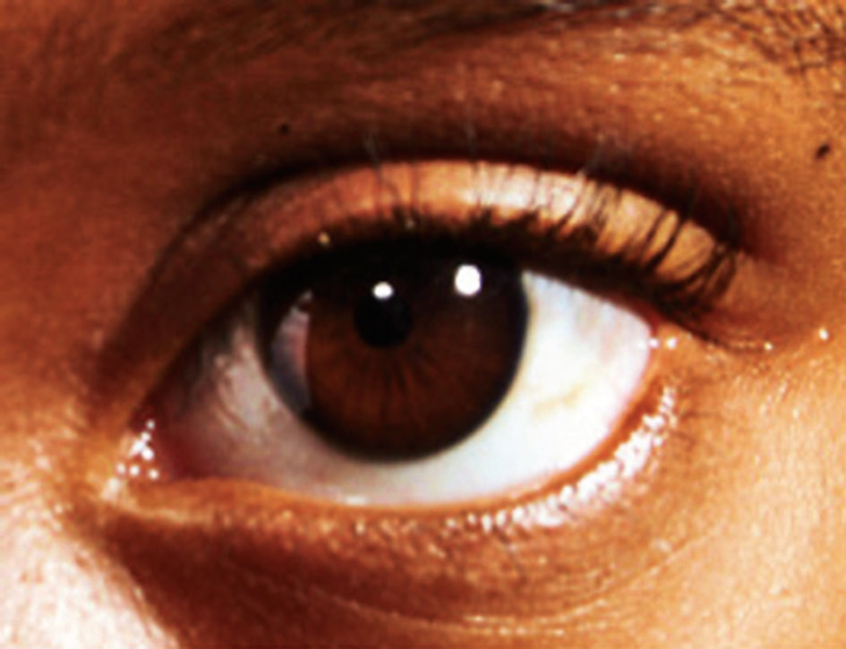

The human eye
The human eye is a natural optical instrument that is exceptionally important for human life. It belongs to a general group of eyes found in nature called “camera-type eyes” since the optical behaviour of the eye is similar to that of a lens camera. The human eye can respond to a range of light frequencies. The human eye looks whitish with a central black spot as seen in Figure 6.17.

Structure of the human eye
The eye is nearly spherical and is about 2.5 cm in diameter. The front portion is somehow more sharply curved and is covered by a tough, transparent membrane called the cornea. The region behind the cornea contains a liquid called aqueous humour. Next to the aqueous humour, there is a crystalline lens, which is a capsule containing a fibrous jelly, hard at the centre and progressively softer at the outer portions. The crystalline lens is held in place by ligaments that attach it to the ciliary muscles which encircle the lens. In front of the lens, there is an aperture with a variable diameter known as the pupil.
The pupil’s size is controlled by the iris, which is attached to the ciliary muscles. The iris is responsible for the colour of the eye. It acts as the diaphragm in a lens camera. Behind the lens, the eye is filled with a thin watery jelly called the vitreous humour. This jelly helps to focus the rays of light and also maintains the shape of the eye. After the vitreous humor, there is a lining on the rear inner surface of the eye called the retina. The retina hosts some photosensitive cells known as cones and rods which respond to the light falling on them. Cones and rods are connected to millions of nerves which are later joined together to form the optic nerve. The eye is protected by a tough whitish skin known as the sclera. Figure 6.18 shows parts of the human eye.